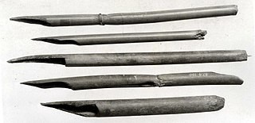
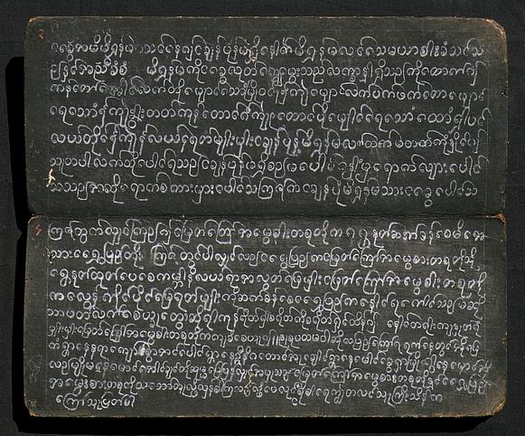
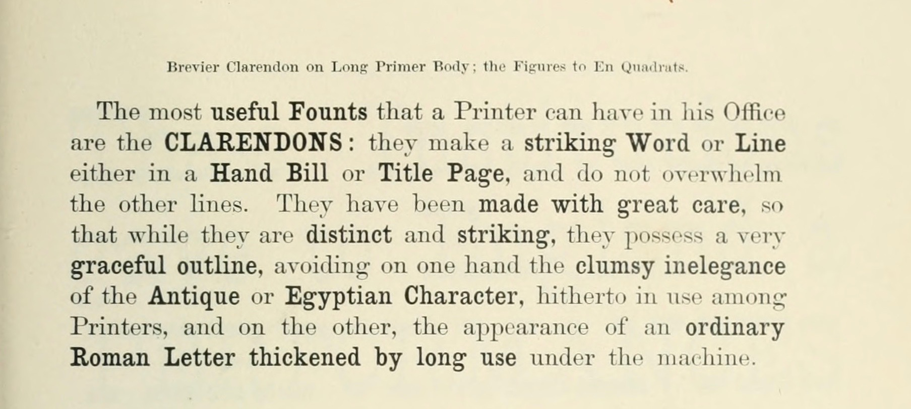
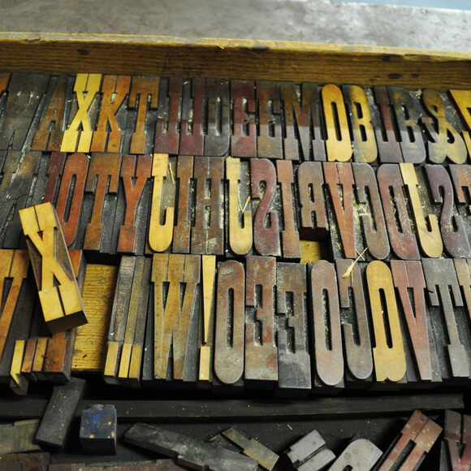

class: section, bottom, middle # Type and Tools ### The relationship of letters and technology --- class: section, bottom ## The Pen --- <figure> <figcaption>Cuneiform c.3000 BCE <a href="https://en.wikipedia.org/wiki/Cuneiform#/media/File:Xerxes_Cuneiform_Van.JPG" target="_blank">Source</a></figcaption> </figure> -- <figure> <figcaption>Blunt end of a reed stylus into wet clay tablets <a href="https://cuneiform.neocities.org/CWT/CWT.html" target="_blank">Source</a></figcaption> </figure> -- <figure> <img src="img/Tigris_River_At_Diyarbakir.jpg" alt="Tigris River"> <figcaption>Tigris River <a href="https://en.wikipedia.org/wiki/Tigris#/media/File:Tigris_River_At_Diyarbakir.JPG" target="_blank">Source</a></figcaption> </figure> --- <figure> <img src="img/800px-Comparative_evolution_of_Cuneiform,_Egyptian_and_Chinese_characters.jpg" alt="Comparison of ancient writing systems"> <figcaption>Comparison of ancient writing systems <a href="https://en.wikipedia.org/wiki/Egyptian_hieroglyphs#/media/File:Comparative_evolution_of_Cuneiform,_Egyptian_and_Chinese_characters.jpg" target="_blank">Source</a></figcaption> </figure> -- <figure>  <figcaption>Egyptian reed pens <a href="https://historyofyesterday.com/a-brief-history-of-pens-7f6666d4446d">Source</a></figcaption> </figure> -- <figure> <figcaption>c.1600 BCE: Hieratic script on Papyrus <a href="https://en.wikipedia.org/wiki/Ancient_Egyptian_medicine#/media/File:Edwin_Smith_Papyrus_v2.jpg">Source</a></figcaption> </figure> --- <figure> <img src="img/701px-Shang_dynasty_inscribed_scapula.jpg" alt="Ancient Chinese Script on Oracle Bones"> <figcaption>c.1200 BCE: Ancient Chinese Script on Oracle Bones <a href="https://en.wikipedia.org/wiki/Chinese_characters#/media/File:Shang_dynasty_inscribed_scapula.jpg">Source</a></figcaption> </figure> -- <figure> <img src="img/XiaozhuanQinquan.jpg " alt="Seal script example"> <figcaption>c. 221 BCE: Seal script style engraved in bronze <a href="https://en.wikipedia.org/wiki/File:XiaozhuanQinquan.jpg">Source</a></figcaption> </figure> -- <figure> <img src="img/clerical-script.jpg" alt="Clerical Script"> <figcaption>c. 185 Han Dynasty Clerical Script. Invention of paper is also dated to this dynasty (202 BCE – 220 CE) <a href="https://www.khanacademy.org/humanities/art-asia/imperial-china/beginners-guide-imperial-china/a/chinese-calligraphy-an-introduction">Source</a></figcaption> </figure> -- <figure> <img src="img/calligraphy-types.jpg" alt="Types of calligraphic scripts"> <figcaption>Types of Chinese calligraphic scripts <a href="https://www.khanacademy.org/humanities/art-asia/imperial-china/beginners-guide-imperial-china/a/chinese-calligraphy-an-introduction">Source</a></figcaption> </figure> --- <figure> <figcaption>Qalam: pen made of cut, dried reed for Arabic encourages pushing the tool instead of pullling, suited for right-to-left writing direction<a href="https://en.wikipedia.org/wiki/Qalam#/media/File:Learning_Arabic_calligraphy.jpg">Source</a></figcaption> </figure> -- <figure> <figcaption>Three different styles of the Burmese script <a href="https://en.wikipedia.org/wiki/Qalam#/media/File:Learning_Arabic_calligraphy.jpg">Source</a></figcaption> </figure> -- <figure>  <figcaption>Burmese Parabaik: paper made from bamboo and palm leaves are blackened, glued and folded together.<a href="https://taweb.aichi-u.ac.jp/DMSEH/">Source</a></figcaption> </figure> --- <figure> <img src="img/brahmi-scripts.png" alt="Brahmi Letter Shapes"> <figcaption>Brahmi letter shapes: In South India, scripts became more rounded, as a result of writing on palm leaves, while in North India, cloth and birch bark allowed for more angular lines. <a href="https://commons.wikimedia.org/wiki/File:Brahmic_Alphabets.png">Source</a></figcaption> </figure> -- <figure> <figcaption>South Indian Palm trees <a href="http://www.walkthroughindia.com/nursery/12-different-types-of-palm-trees-found-in-india/">Source</a></figcaption> </figure> -- <figure> <figcaption>Birch bark <a href="https://enjoyburlington.com/barking-right-tree/paper-birch-bark/">Source</a></figcaption> </figure> -- <div class="text"> See also: <ul> <li><a href="https://www.indiantypefoundry.com/news/release-brahmos-multiscript" target="_blank">Indian Type Foundry: Brahmos</a></li> <li><a href="https://www.typemag.org/post/the-story-of-yatra" target="_blank">Catherine Schmidt: Story of Yatra</a></li> </ul> </div> --- <figure> <figcaption>Roman brush lettering<a href="http://www.eyemagazine.com/review/article/a-roman-legacy">Source</a></figcaption> </figure> -- <figure> <figcaption>Broad flat brushes defined the letters before they were carved <a href="http://www.thing.net/~grist/ld/TextBackHome/Roman.htm">Source</a></figcaption> </figure> -- <div class="text"> See also: <a href="https://www.instagram.com/genramirez/">Roman Capital lettering by Gen Ramirez</a> </div> --- <figure> <figcaption>Evolution of various Roman / Greek uncials <a href="https://en.wikipedia.org/wiki/Uncial_script#/media/File:Evolution_of_minuscule.svg">Source</a></figcaption> </figure> -- <figure> <figcaption>c. 800: Book of Kells demonstrates the Irish uncial <a href="https://en.wikipedia.org/wiki/Uncial_script#/media/File:KellsFol309r.jpg">Source</a></figcaption> </figure> -- <figure> <figcaption>1568: Parchment and paper maker. The use of parchment declines as paper is more affordable. <a href="https://en.wikipedia.org/wiki/Parchment#/media/File:Permennter-1568.png">Source</a></figcaption> </figure> --- class: section, bottom, middle ## Movable Type --- <figure> <figcaption>1041: Bi Sheng in China invents “movable type” from a clay-like material similar to porcelain <a href="https://www.prepressure.com/printing/history/bc-1399">Source</a></figcaption> </figure> -- <figure> <figcaption>1377: Korean Buddhist document <em>Jikji</em>, oldest metal type specimen<a href="https://www.prepressure.com/printing/history/bc-1399">Source</a></figcaption> </figure> -- <figure> <figcaption>Metal type did not replace woodblock printing due to expense of producing the number of pieces required in CJK alphabets. <a href="https://en.wikipedia.org/wiki/Woodblock_printing#/media/File:Korean_printing_block.jpg">Source</a></figcaption> </figure> -- <div class="text"> See also: <a href="https://www.atlasobscura.com/places/rixing-type-foundry">Rixing Type Foundry</a> </div> --- <figure> <figcaption>1436: Gutenberg develops the printing press <a href="https://www.history.com/news/printing-press-renaissance">Source</a></figcaption> </figure> -- <figure> <figcaption>c. 1876: Punch (left) and matrix (right) used in type-founding. <a href="https://en.wikipedia.org/wiki/Punchcutting#/media/File:De_Vinne_1876_-_Punch_and_matrix.jpg">Source</a></figcaption> </figure> -- <figure> <img src="img/divided-upper-lower-case.jpg" alt="Metal type cases"> <figcaption>Metal type cases <a href="https://99percentinvisible.org/article/fit-print-split-level-storage-explains-upper-case-lower-case-letters/">Source</a></figcaption> </figure> --- <figure> <img src="img/manutius.jpg" alt="Aldus Manutius"> <figcaption>Aldus Manutius (c. 1452-1515) was one of the first typographers to use italic forms, modeled from the humanist handwriting of the day. <a href="https://www.nytimes.com/2015/02/27/arts/design/a-grolier-club-tribute-to-the-printer-aldus-manutius.html">Source</a></figcaption> </figure> -- <figure> <img src="img/956px-Manuale-Tipografico1.jpg" alt="Bodoni"> <figcaption>1818: The high-contrast and hairline serifs in Bodoni’s design was enabled by the quality of metal casting and the smoothness of paper. <a href="https://en.wikipedia.org/wiki/Bodoni#/media/File:Manuale-Tipografico1.jpg">Source</a></figcaption> </figure> -- <figure>  <figcaption>1874: Different weights are developed to provide emphasis <a href="https://en.wikipedia.org/wiki/Clarendon_(typeface)#/media/File:Fann_Street_Foundry_Clarendon_image_with_text_for_emphasis.jpg">Source</a></figcaption> </figure> -- <figure> <figcaption>1918: Morris Fuller Benton develops a variety of weights and styles for Cheltenham. It was among the first typefaces to be released as a type ‘family.’<a href="http://idsgn.org/posts/know-your-type-cheltenham/">Source</a></figcaption> </figure> --- <figure> <figcaption>1899 specimen from Hamlton Wood Type <a href="http://luc.devroye.org/fonts-39705.html">Source</a></figcaption> </figure> -- <figure>  <figcaption>Wooden type allowed much larger sizes to be printed <a href="https://www.atlasobscura.com/places/hamilton-wood-type-printing-museum">Source</a></figcaption> </figure> -- <figure style="height: 100%; top: 0px;"> <img src="img/playbill.jpg" alt="Wood Type Poster"> <figcaption>With the impact of Wood type, posters proliferated for entertainment, advertising, political campaigns<a href="http://www.leodis.net/playbills/item.asp?ri=20031014_84785098#">Source</a></figcaption> </figure> --- <figure> <figcaption>1873: Sholes and Glidden typewriter with QWERTY keyboard <a href="https://typographica.org/on-typography/typewriter-typeface-the-legacy-of-the-writing-machine-in-type-design/">Source</a></figcaption> </figure> -- <figure> <figcaption>Typewriter Mechanisms <a href="https://typographica.org/on-typography/typewriter-typeface-the-legacy-of-the-writing-machine-in-type-design/">Source</a></figcaption> </figure> -- <figure> <figcaption>IBM Selectric Type Samples <a href="https://www.flickr.com/photos/nicksherman/14249132603">Source</a></figcaption> </figure> --- class: section, bottom, middle ## Digital Type --- <figure> <figcaption>Morisawa Phototypesetting Machine from 1960s <a href="https://www.typemag.org/post/the-last-phototypesetter">Source</a></figcaption> </figure> -- <figure> <figcaption>Instead of using metal type, photo typsetting projects a light through a film negative of a character, while a lens that magnifies or reduces the size of the character <a href="https://www.typemag.org/post/the-last-phototypesetter">Source</a></figcaption> </figure> -- <figure> <figcaption>Frutiger’s Univers aimed to take advantage of Phototypsetting technology. <a href="http://www.designishistory.com/1940/adrian-frutiger/">Source</a></figcaption> </figure> --- <figure> <figcaption>1965: Rudolf Hell invents Digiset, the first digital typesetter <a href="https://www.hell-kiel.de/de/hell-entwicklungen/182-satztechnik/digiset/372-digiset-50-t-1">Source</a></figcaption> </figure> -- <figure> <img src="img/unger-a.jpg" alt="Apple Macintosh"> <figcaption>Gerard Unger’s Demos, decomposed of several hundred bitmaps, to be used for typesetting on the Hell Digiset <a href="https://medium.com/@fpeulrich/a-brief-overview-of-developments-in-digital-type-design-561d9e63a122">Source</a></figcaption> </figure> -- <figure> <figcaption>A 8 x 8 bitmap composed of 0s and 1s<a href="https://flylib.com/books/en/1.122.1/game_graphics_learning_to_use_bitmaps.html">Source</a></figcaption> </figure> -- <div class="text"> See also: <a href="https://www.bloomberg.com/graphics/2015-paul-ford-what-is-code/#how-do-you-type-an-a" target="_blank">Paul Ford: What is Code</a> </div> --- <figure> <figcaption>1984: Apple Macintosh <a href="https://www.prepressure.com/printing/history/1950-1999">Source</a></figcaption> </figure> -- <figure> <img src="img/susan_kare.gif" alt="Susan Kare Icons"> <figcaption>1984: Susan Kare Icons <a href="https://qz.com/1666437/mac-icon-designer-susan-kare-explains-the-inspiration-for-her-designs/">Source</a></figcaption> </figure> -- <figure> <img src="img/ipod-chicago.png" alt="Chicago"> <figcaption>2003: Kare’s Chicago font on third-generation iPod <a href="https://en.wikipedia.org/wiki/Chicago_(typeface)#/media/File:Ipod_backlight_transparent.png">Source</a></figcaption> </figure> -- <div class="text"> See also: <a href="https://en.wikipedia.org/wiki/Core_fonts_for_the_Web" target="_blank">Core Web Fonts</a> </div> --- <figure> <img src="img/bit-to-line.jpg" alt="Vector"> <figcaption>1974: Outline fonts are drawings constructed by mathematical formula, allowing any character outline to be scalable to any size. <a href="http://www.designhistory.org/Digital_Revolution_pages/EarlyDigType.html">Source</a></figcaption> </figure> -- <figure> <figcaption>Adobe Postscript, 1985 <a href="http://pdf-tips-tricks.blogspot.com/2008/07/how-to-play-with-postscript-options.html">Source</a></figcaption> </figure> -- <figure> <img src="img/splines.jpg" alt="Splines"> <figcaption>Apple TrueType splines, late 1980s <a href="https://twitter.com/teropa/status/1037637607402954752/photo/1">Source</a></figcaption> </figure> --- <figure> <img src="img/bezier-cubic.gif" alt="Cubic Bezeir"> <figcaption>Cubic Bezier Curves<a href="https://commons.wikimedia.org/wiki/Template:Other_versions/B%C3%A9zier_curves">Source</a></figcaption> </figure> -- <figure> <img src="img/bezier-all.gif" alt="Cubic Bezeir"> <figcaption>All types of Bezier Curves<a href="https://en.wikipedia.org/wiki/File:Bezier_All_anim.gif">Source</a></figcaption> </figure> -- <div class="text"> See also: <a href="http://paperjs.org/" target="_blank">Paper.js by</a>Jürg Lehni & Jonathan Puckey. </div> --- <figure> <img src="img/mm-fonts.png" alt="Multiple Master"> <figcaption>1991: Adobe Multiple Master, a predecessor to Open Type Variable Fonts <a href="https://adobe-type-tools.github.io/font-tech-notes/pdfs/5091.Design_MM_Fonts.pdf">Source</a></figcaption> </figure> -- <figure> <figcaption>1997: Microsoft / Adobe Open Font Format extends font’s typographic and language support capabilities.<a href="https://sparanoid.com/lab/opentype-features/">Source</a></figcaption> </figure> -- <div class="text"> See also: <a href="https://helpx.adobe.com/fonts/user-guide.html/fonts/using/open-type-syntax.ug.html" target="_blank">Open Type Features</a> </div> --- ## OpenType 1.8 -- ### Variable Fonts --- A variable font is a single font file contains many different variations of a typeface, instead of having a separate font file for every width, weight, or style. This format was developed in collaboration by Adobe, Apple, Google, and Microsoft. Advantages of variable fonts - Font loading - HTTP requests - KB of data (depends on character set and design space) - Purer expression of type design process - Designer Options --- <figure> <figcaption>Just van Rossum’s animated Noordzij cube showing an interpolation space with multiple poles and axes.<a href="https://typetr.typenetwork.com/news/article/The-Gerrit-Noordzij-Cube">Source</a></figcaption> </figure> -- <figure> <img src="img/interpolation.svg" width="600" alt="Noordzij Cube"> <figcaption>Masters vs. Instances <a href="https://glyphsapp.com/learn/multiple-masters-part-1-setting-up-masters">Source</a></figcaption> </figure> --- <figure> <figcaption>Magmatic Design Space visualizer (Occupant Fonts)</figcaption> </figure> -- <figure> <img src="img/magmatic-vfviz2.png" alt="Magmatic Design Space visualizer"> <figcaption>Magmatic Design Space visualizer (Occupant Fonts)</figcaption> </figure> -- <figure> <figcaption>Magmatic in Glyphs (Occupant Fonts)</figcaption> </figure> --- <figure> <figcaption>Gimlet widths and responsive text <a href="https://djr.com/gimlet">Source</a></figcaption> </figure> --- ### Standard (registered) axes - Standard Axis are ”registered” variation axes with given names - Custom Axis require a 4-letter key defined are ALL CAPS - See also: [OpenType Design-Variation Axis Tag Registry](https://docs.microsoft.com/en-us/typography/opentype/spec/dvaraxisreg) |syntax| description | Non-VF equivalent |---|---| --- |wght| weight | `font-weight` |wdth| width | `font-stretch` |opsz| optical sizing | `font-optical-sizing` |ital| italicization | `font-style: italic` |slnt| slant | `font-style: oblique ` --- class: middle center ## Variation as a Medium --- Marie Otsuka, March 2021